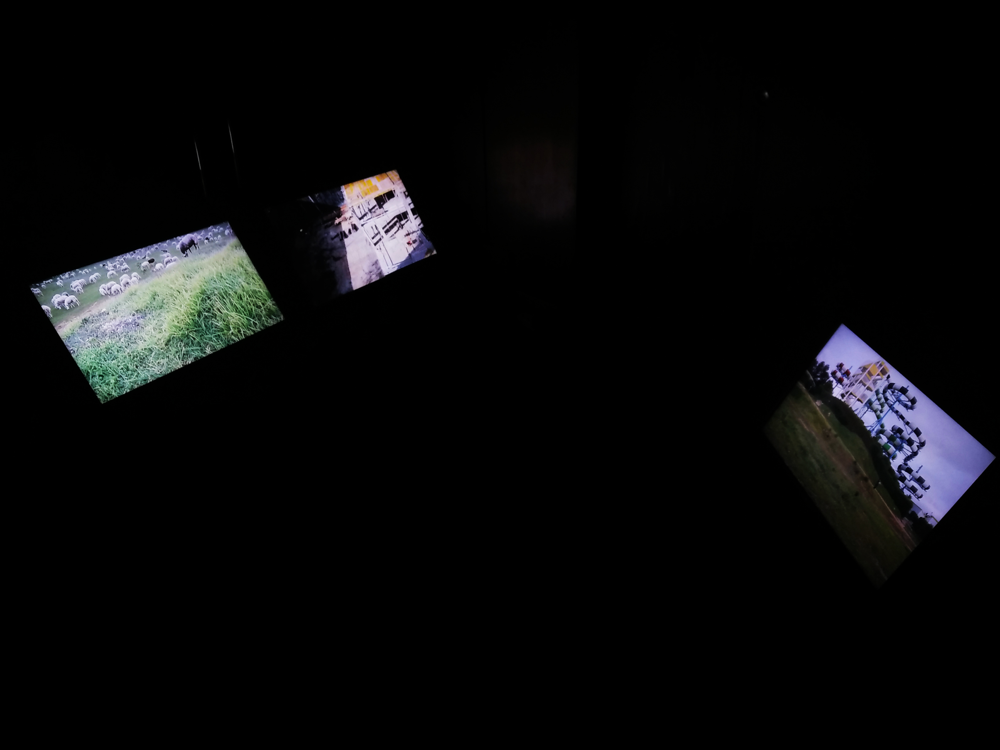
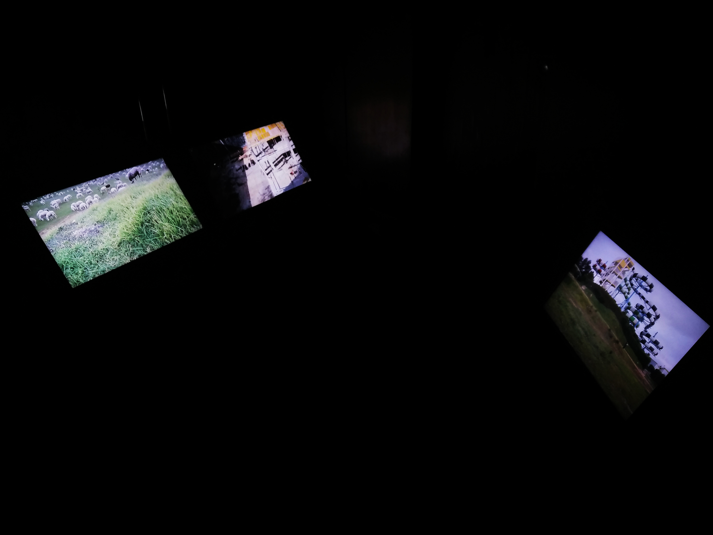

Untitled
2019
Vídeo HD 09’58’’, cor, loop
Sinopse:
A performer insere-se num rebanho.
HD video, color, loop, 09'58''
Synopsis:
The performer inserts herself in a flock.



Untitled
2019
Vídeo HD 09’58’’, cor, loop
Sinopse:
A performer insere-se num rebanho.
HD video, color, loop, 09'58''
Synopsis:
The performer inserts herself in a flock.

As três peças (I want to see but there is something in (front of) my eyes, Untitled (follow me back), Untitled) são apresentadas enquanto instalação, dispostas em três ecrãs, que se aglomeram e se correlacionam num espaço comum, onde o espetador opta por escolher o que vê e o que acaba por não ver. Os três vídeos disponibilizam-se em repetição (loop), numa sala iluminada apenas pela luz dos ecrãs e preenchida pelo som proveniente do vídeo I want to see but there is something in (front of) my eyes.
⤹